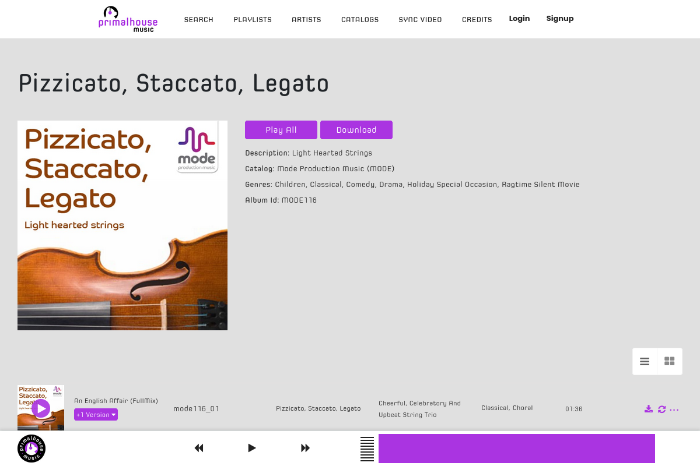

圖書館音樂研究所
音樂圖書館
使用公司
音樂圖書館
/
Mode
/
PCPM025 - China in Chaotic Era - Percussion
/ The Cats Whiskers
The Cats Whiskers - Robert Guerrier

巧連智中年級版 2013年11月號 作文探險隊CD 勇闖叢林金字塔
巧連智中年級版 2016年11月號 作文探險隊CD 來寫日記吧！